（12/28追記）「ソニック25周年カフェ」好評につき、大阪「スイーツパラダイス天王寺店」開催決定！
ソニック25周年を記念し、東京・上野にて期間限定で開催し終了した、食べ放題型テーマパーク「スイーツパラダイス」とのコラボレーションカフェ「ソニック25周年カフェ」が好評につき、続いて大阪・天王寺「スイーツパラダイス天王寺店」で2016年12月16日（金）～2017年1月9日（月・祝）まで期間限定でオープンする事を決定いたしました。
（2016年12月28日追記）
ご盛況いただいている大阪・天王寺「スイーツパラダイス天王寺店」でのコラボレーションカフェ「ソニック25周年カフェ」は、好評により開催期間を2017年1月30日（月）まで、延長する事が決定いたしました！また、ノベルティの配布については延長開始の2017年1月10日（火）以降は第1弾、第2弾とも全種類が登場いたします！
「スイーツパラダイス天王寺店」で展開される本コラボレーションカフェでは、東京の店舗と同様「ソニック」シリーズの登場キャラクターや世界観をイメージしたオリジナルメニューが登場します。
また、メニューをご注文いただいたお客様には、オリジナルデザインのコースターやステッカーなど、「ソニック」シリーズに関連するノベルティグッズをその場でプレゼントいたします。
さらに、期間中の店内は「ソニック」シリーズの歴代登場キャラクターたちのパネルや、代表的なステージである「グリーンヒルゾーン」をイメージした壁面装飾、また、多数のソニックぬいぐるみがお出迎えするスポットがあるなど、記念撮影に適した装飾に彩られます。
期間限定の「ソニック25周年カフェ」のオリジナルメニューを、この機会にぜひご賞味ください。
| イベント名称 | ソニック25周年カフェ |
|---|---|
| 開催日時 | 2016年12月16日（金）～2017年1月30日（月）まで |
| 開催場所 | スイーツパラダイス天王寺店（大阪市天王寺区悲田院町10-39 天王寺ミオ11F） |
| 営業時間 | 11:00 ～ 22:00（休日は天王寺ミオに準ずる） |
| メニュー | 「ソニック25周年カフェ」コラボセット 大人2,180円（税込）／子供1,510円（税込）／3歳以下650円（税込）
|
| ノベルティグッズ |
|
| 店舗 Webページ | スイーツパラダイス 天王寺店 |
- ※「ソニック25周年カフェ」オリジナルメニュー単品のみのご注文はできません。
- ※ご入店の際は、食べ放題・飲み放題1530円（税込）を必ずご注文ください。
- ※ノベルティグッズの種類は選べません。
- ※追加オーダーには制限を設ける場合があります。
- ※内容は予告なく変更となる場合があります。予めご了承ください。
メニュー
フード
エッグマン帝国のオムライス
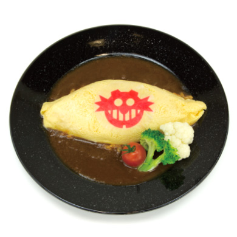エッグマン帝国のマークがあしらわれた不気味なオムライス。その見た目に反して味はしっかりとおいしい一品。
ソニックの音速チリドッグ
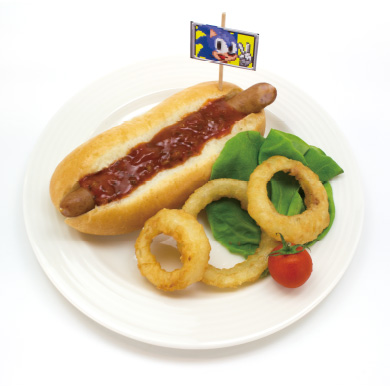ソニックの大好物であるチリドッグが登場。コース上のリングに見立てたオニオンリングと一緒にどうぞ。
シャドウのブラックカレー
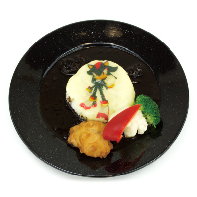シャドウ・ザ・ヘッジホッグのカラーをイメージしたブラックカレー。食べれば究極生命体の力が宿るかも！？
テイルスのカルボナーラ
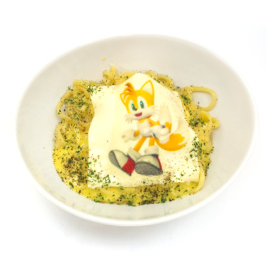ソニックの相棒、テイルスのカラーをイメージしたカルボナーラ。スイーツパラダイス自慢の自家製生パスタをご賞味あれ。
デザート
グリーンヒルケーキ
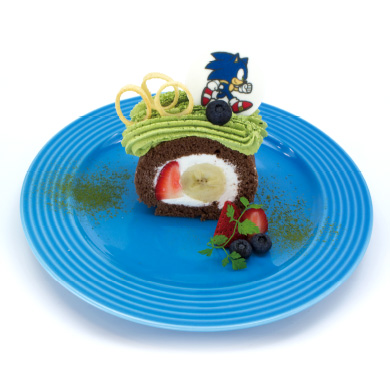おなじみの"グリーンヒルゾーン"のステージをイメージしたロールケーキ。コース上のリングに見立てたわなげスナックがポイント。
エミーの手作りピンクケーキ
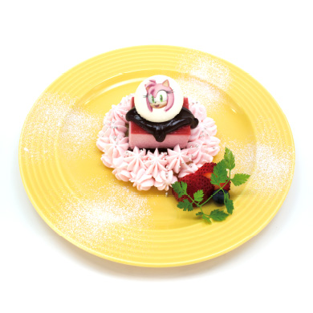料理自慢のエミーが心を込めて作った、3種のベリーを使ったピンクムースのケーキ。かわいらしいデコレーションが特徴的なデザート。
ドリンク
チャオのぷるぷるドリンク
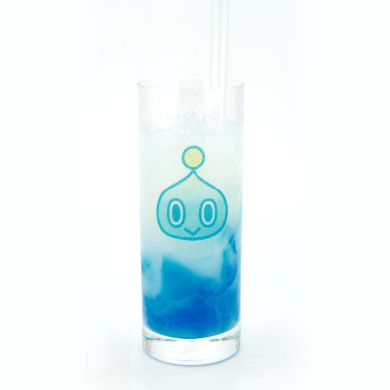愛らしい見た目のチャオをイメージしたゼリードリンク。癒やしが足りないと感じた時にどうぞ。
テイルスラボの実験溶液
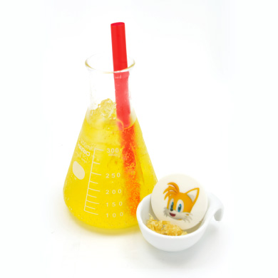テイルスラボが開発した特製ドリンク。パチパチした食感とエナジー系の味がクセになる。
シルバーの超能力ソーダ
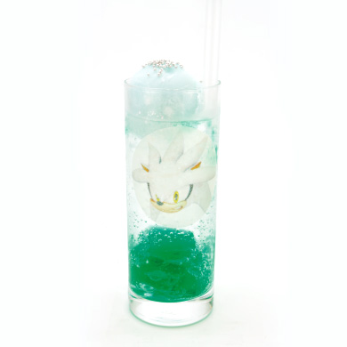シルバー・ザ・ヘッジホッグの得意技であるサイコキネシスの力をイメージしたドリンク。
スティックスのジャングルジュース
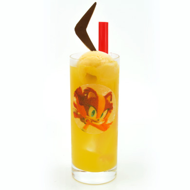「ソニックトゥーン」シリーズからの新たな仲間、スティックス・ザ・バジャーをイメージしたドリンク。トロピカルでワイルドな味わい。
ナックルズのパワードリンク
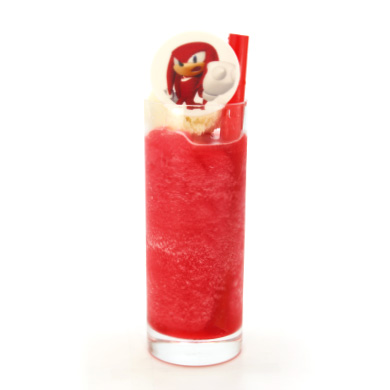パワフルに地中を掘り進むナックルズをイメージした赤いフローズンドリンク。味はバニラ＆いちごでやさしい口あたり。
ソニックラテ
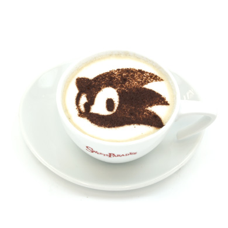ソニック生誕25周年を記念して、クラシックソニックのシルエットのモチーフとしたオリジナルラテが登場。
ノベルティ
コースター
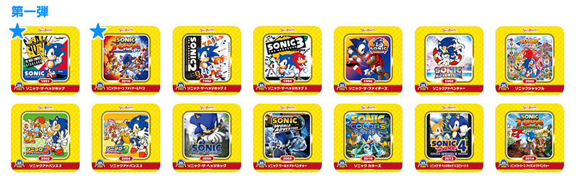 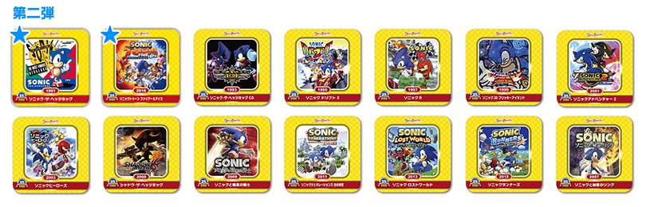各年代に発売された歴代「ソニック」シリーズのパッケージがデザインされたオリジナルコースター全14種。メニューが運ばれてくるときは裏面が出ているので、どの絵柄かはめくってみてのお楽しみです。（図柄は第二弾展開のラインナップ）
ステッカー
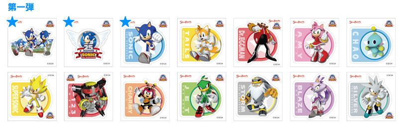 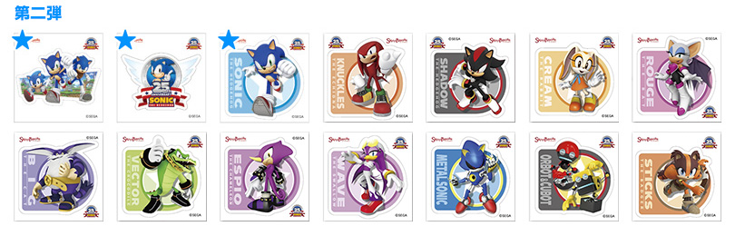ソニック生誕25周年を記念したキーアートやロゴをはじめ、歴代のソニックの仲間たちがデザインされた特製ステッカー全14種。思い出の一作を手に入れよう。（図柄は第二弾展開のラインナップ）
- ※2017年1月10日（火）以降は第1弾、第2弾とも全種類が登場となります
- ※第一弾は12月16日から12月26日まで展開、12月27日以降は第二弾ラインナップでの展開となります
- ※「★」マークのノベルティグッズは全期間共通の内容です